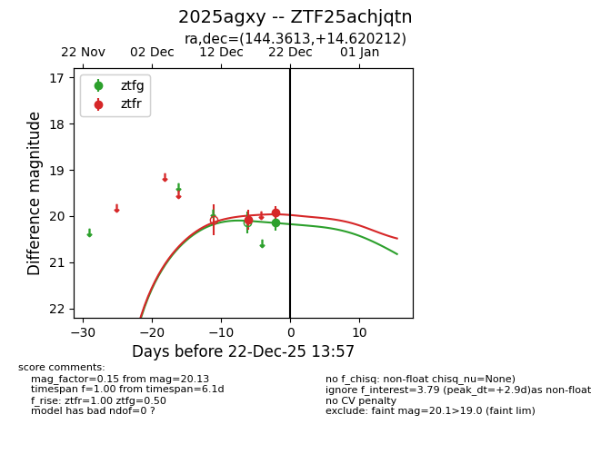
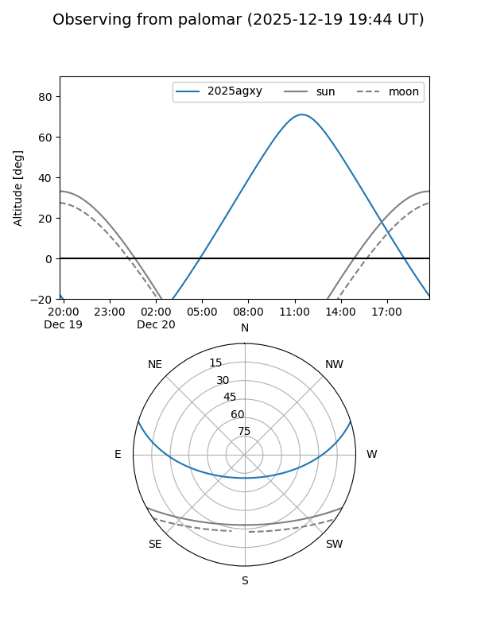

2025agxy
Target 2025agxy at 2025-12-22 14:03
Aliases and brokers:
FINK: fink-portal.org/ZTF25achjqtn
Lasair: lasair-ztf.lsst.ac.uk/objects/ZTF25achjqtn
ALeRCE: alerce.online/object/ZTF25achjqtn
TNS: wis-tns.org/object/2025agxy
YSE: ziggy.ucolick.org/yse/transient_detail/2025agxy
alt names
ZTF25achjqtn (ztf,fink_ztf)
2025agxy (tns,yse)
Coordinates:
equatorial (ra, dec) = 144.3613,+14.62021
equatorial (HMS+DMS) = 09:37:26.72,+14:37:12.76
galactic (l, b) = (218.2713,+43.29422)
Flags:
Photometry:
last ztfg=20.13, ztfr=19.93
1 ztfg, 2 ztfr detections
Lightcurve

Visibility


Additional plots